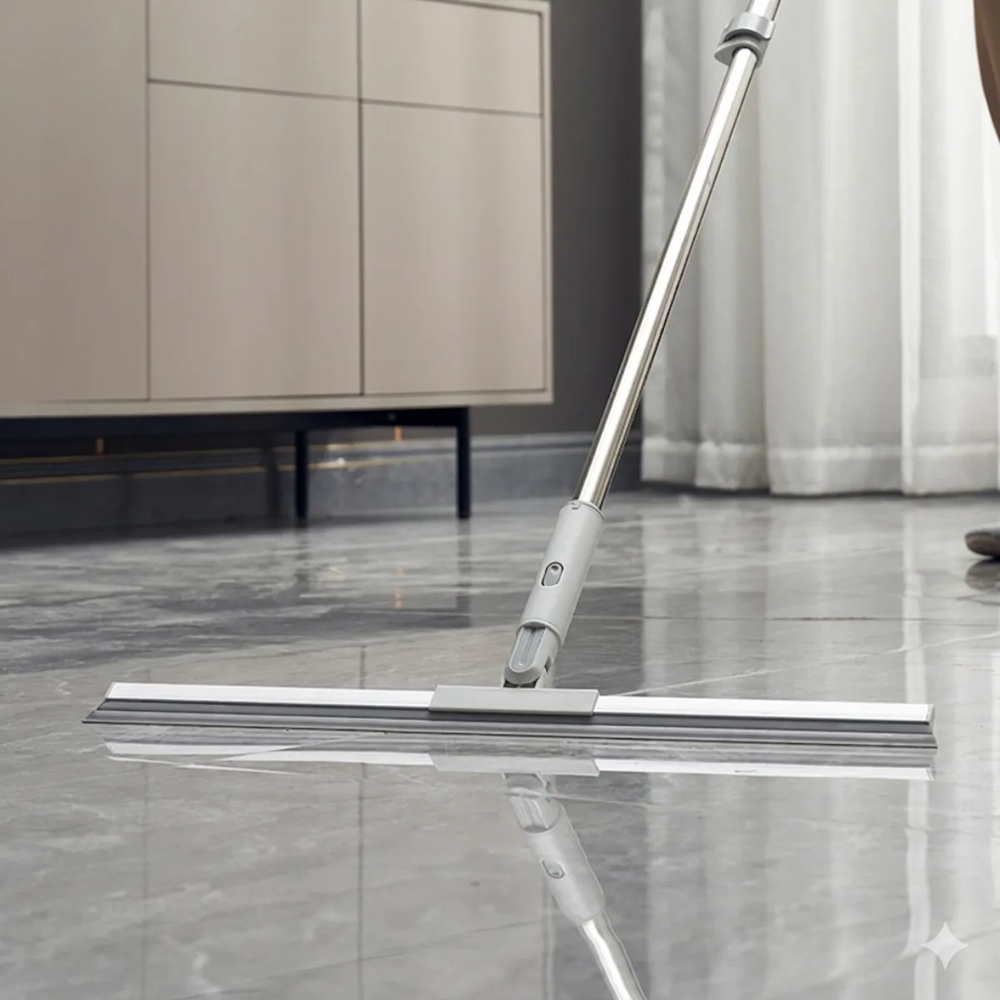
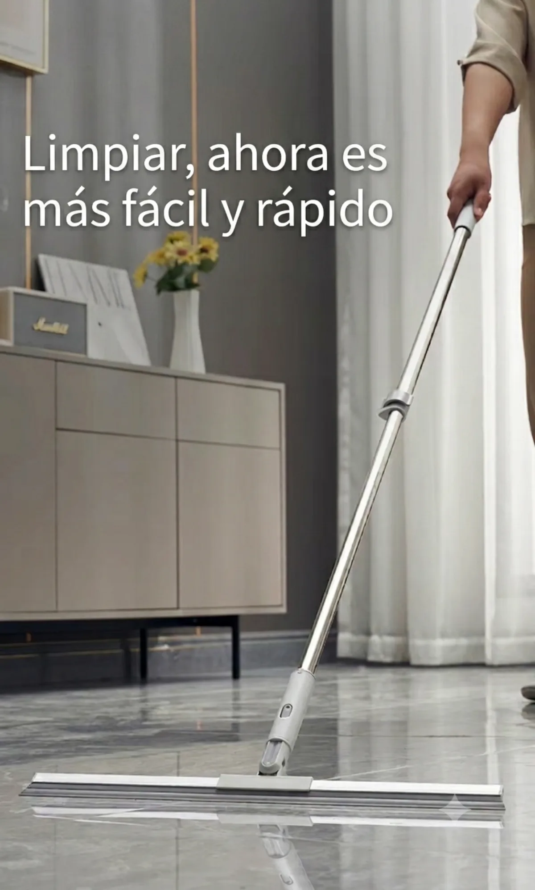
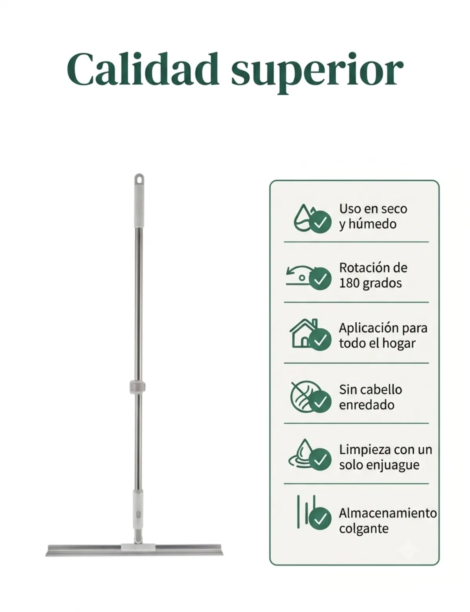
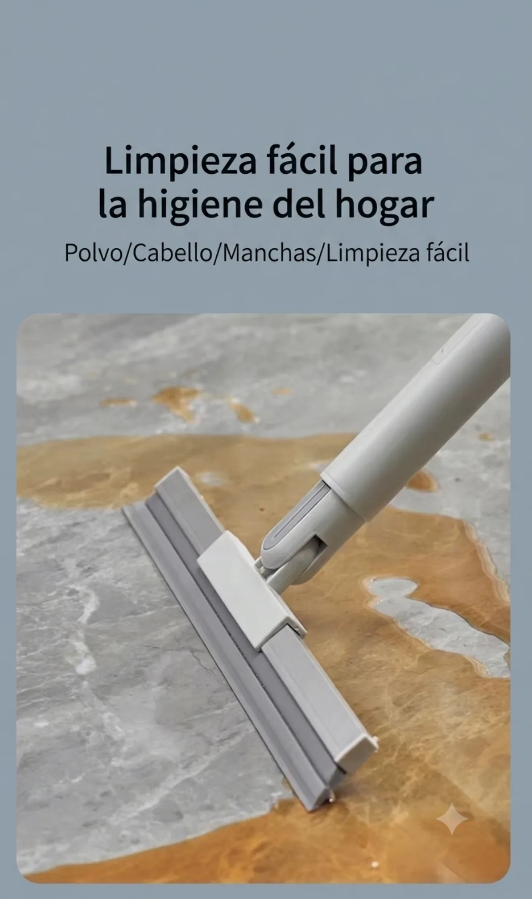
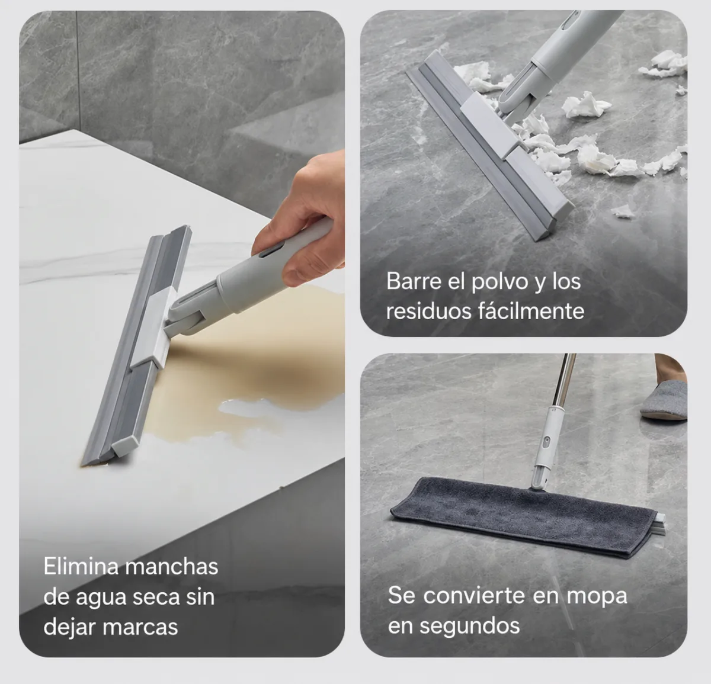
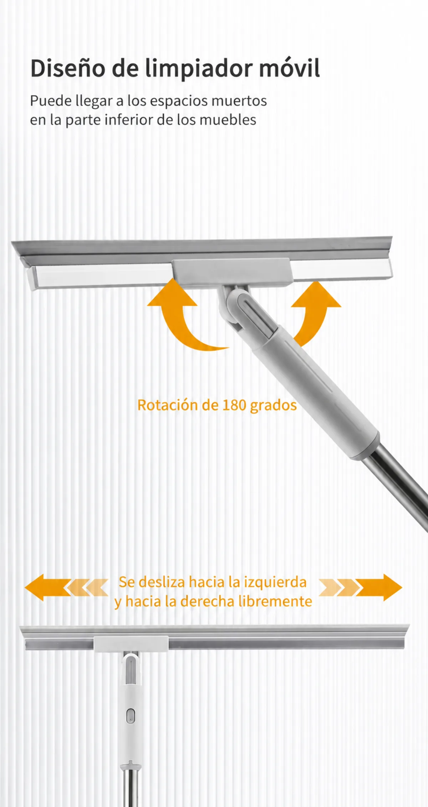
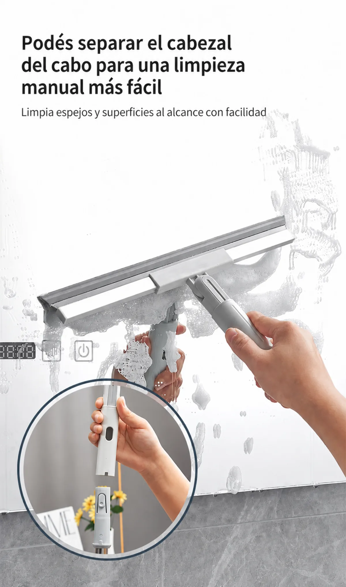
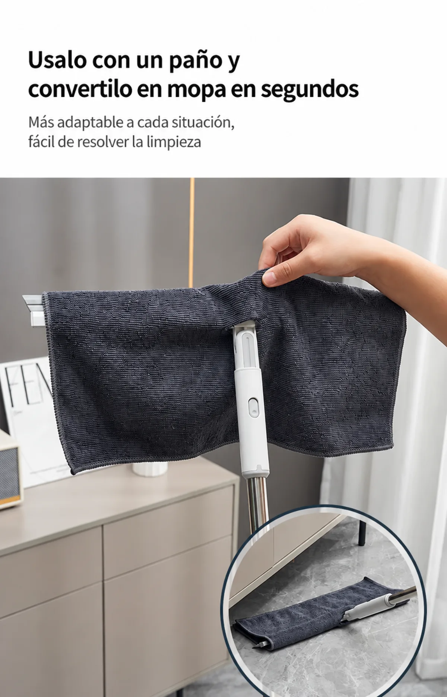
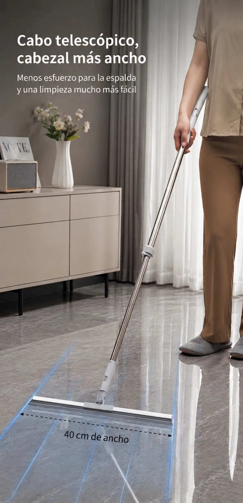
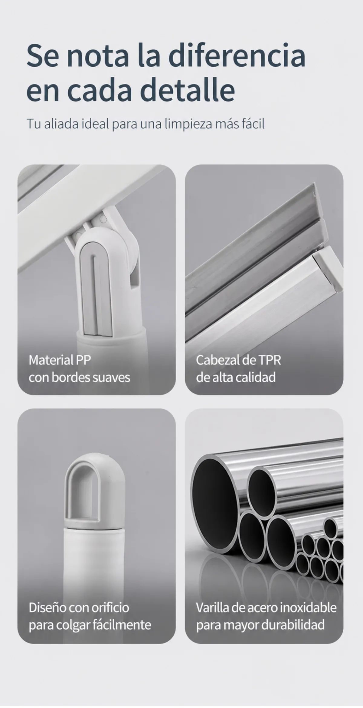

Cabezal 40 cm · Rotación 180° · Cabo telescópico 125 cm
Pago 100% seguro · Envío gratis · Protección al comprador
¡Limpiar ahora es mucho más fácil y rápido! Descubrí la herramienta definitiva que va a transformar la rutina de cuidado de tu hogar. Este Secador y Escoba Multiuso Premium combina la máxima eficiencia de secado con un diseño inteligente y ergonómico, diseñado para ofrecerte una limpieza profunda con el menor esfuerzo.
Ya sea para eliminar líquidos, barrer polvo o limpiar superficies en altura, este innovador sistema 3 en 1 se adapta por completo a tus necesidades.
Material TPR de alta calidad: el cabezal está fabricado con caucho termoplástico (TPR) premium que se adhiere perfectamente al suelo, eliminando manchas de agua seca y líquidos densos sin dejar marcas ni vetas. Su estructura de polipropileno (PP) con bordes suaves protege tus muebles de golpes accidentales.
Diseño 2 en 1 con cabezal desmontable: con un práctico botón de liberación rápida, podés separar el cabezal del cabo para usarlo de forma manual — ideal para limpiar espejos, vidrios, mamparas de baño y mesadas.
Convertilo en mopa en segundos: su diseño versátil te permite incorporarle un paño o microfibra sobre el cabezal, transformándolo instantáneamente en una mopa para abrillantar o repasar tus pisos.
Especificaciones técnicas: ancho del cabezal 40 cm · ángulo de rotación 180° · cabo de acero inoxidable de alta resistencia · cabezal de silicona TPR de alta calidad con cuerpo de PP de bordes suaves · apto para uso en seco y húmedo.
Funciones: secador de piso, escoba atrapa-pelo, limpiador de vidrios y espejos, y mopa (usando un paño).
¿Qué incluye? 1 cabezal secador de silicona TPR de 40 cm · 1 cabo telescópico extensible de acero inoxidable de 125 cm.